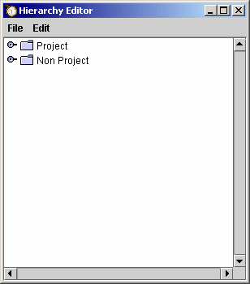
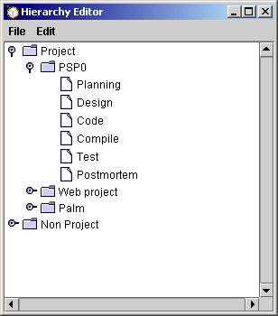
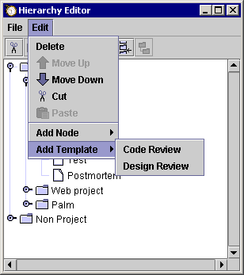
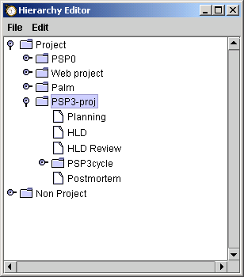
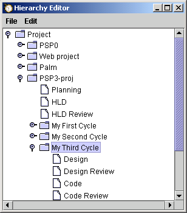

The hierarchy editor allows you to create a work breakdown structure for your work, and also defines the process elements that will be used for a given software project. The hierarchy editor can be opened by selecting the "Hierarchy Editor" option on the configure menu.
Its basic function is to allow creation and deletion of nodes in a project tree. You can create any arbitrary node structure to organize the different types of projects you are working on, and add project templates to the tree from the template files provided.

When the hierarchy editor is started, it looks more or less like this. In the screen shot shown, some child nodes have already been defined under both "Project" and "Non Project".
When the little tree control is pointing to the right, it indicates that the node can be expanded. Clicking the tree control will cause the expansion of the tree. When the control is pointing down, it indicates that the node is showing its expansion and can be collapsed.
The File menu provides the choices of Close, Save, and Revert. Their functionality is pretty self-explanatory: Close closes the editor, Save saves the changes to the dashboard project tree, and Revert will revert the project tree back to its state when the editor was opened.
The Edit menu provides some rudimentary editing control on the project hierarchy. It provides the choices of Delete, Add Node, and Add Template.
Delete will allow the deletion of a portion of the project tree. It deletes the selected node and all its children from the tree.
Add Node allows insertion of nodes into the tree. Use this choice when you wish to add organization to your work projects. Actual projects themselves should NOT be added in this way, but should be added via "Add Template". The Add Node menu brings up a cascading second menu that provides the choices of Above, Below, and As Child. Again, these are pretty self-explanatory: Above will add a node to the tree as a sibling to the selected node, and will place it above the selected node; Below will also add a sibling node, but will place it below the selected node; As Child will add a node as a child of the selected node.
Add Template allows insertion of a process template into the tree. Use this choice when you are ready to define a project. The Add Template menu brings up a cascading second menu that provides choice for the various defined processes. The 7 PSP process levels are provided, along with two others: Generic and Timer. For more information about the processes and their scripts, see the process scripts help topic.
Any node in the project hierarchy can be renamed except for the process elements themselves (i.e. Planning, Design, Code, etc.). To rename a node, click the node once to select it, then wait a moment and click it again to go into edit mode. The name will appear as a text entry. You can hit return to finish changing the name, or escape to cancel the name change.
When a process template is added, all the process phase elements that are defined for that process will be automatically added as children.

These process phases cannot be edited in any way (with a couple exceptions). If a process phase is selected and the Edit menu is clicked, the menu will show all entries greyed out and disabled. This is to protect the integrity of the processes themselves.
PSP processes PSP0 through PSP1.1 do not provide for design or code reviews, as those improvements are introduced in PSP level 2. However, the dashboard will allow you to add design and or code reviews to these low level PSP processes if you choose. If you pick on a project that was defined from the PSP0, PSP0.1, PSP1, or PSP1.1 process templates and then choose the "Add Template" menu you will see Design Review and Code Review choices. Either of these can be added to the process. They will be automatically inserted in the correct places in the process phase order.

The PSP3 process is a cyclic development process. As such, it provides a basic structure for the whole project and also provides the ability to add development cycles. When a PSP3 process is added to the hierarchy, it will only have the basic skeletal structure defined (Planning, High Level Design, High Level Design Review, and Postmortem phases).

The next step in defining a PSP3 project will be to add one or more cycles. Each of these cycles will contain the other PSP3 process phases (Design, Design Review, Code, Code Review, Compile, Test, and Reassessment). The PSP3 cycles are added just like the PSP3 project itself, via the "Add Template" menu. When a PSP3 based project is selected and the Edit menu is chosen, the Add Template menu item will have only one available choice: PSP3cycle. The cycle will be placed appropriately before the Postmortem step. You can input as many cycles as you would like in this manner.

Currently, the hierarchy editor is pretty limited in what it can do. If you go through and rename various nodes in the hierarchy after the dashboard has already measured information for them, you are likely to lose that information. A much improved version of the editor is planned for a future release. In the meantime, you shouldn't mess around with any parts of the project tree that have already recorded data.